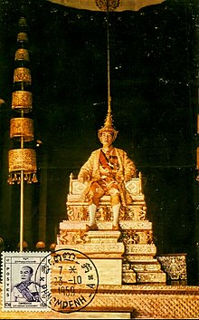

Norodom Suramarit (Khmer: នរោត្តម សុរាម្រិត, Nôroŭttâm Sŏréamrĭt [nɔˈroːɗɑm soˈraːmrɨt]; 6 March 1896 – 3 April 1960) was King of Cambodia from 3 March 1955 until his death in 1960.[citation needed] He was the father of King Norodom Sihanouk and the grandfather of Cambodia's current king, Norodom Sihamoni. Suramarit was born in Phnom Penh to Prince Norodom Sutharot. When his grandfather King Norodom died in 1904, Norodom's brother Sisowath took the throne. King Sisowath died in 1927 and was succeeded by his son Monivong.
Suramarit married Monivong's daughter Sisowath Kosamak. Upon Monivong's death in 1941, Sihanouk, Suramarit's son and Monivong's grandson, was selected as the new king. In 1955, Sihanouk abdicated in favor of his father. He was formally crowned on 6 March 1956, which coincided with his 60th birthday.
Following Suramarit's death in 1960, Sihanouk became Chief of State, while Suramarit's wife Sisowath Kosamak became Queen. Suramarit was given the posthumous title of Preah Karuna Preah Norodom Suramarit Preah Moha Kachanakkot (ព្រះករុណាព្រះនរោត្តមសុម្រិត ព្រះមហាកាញ្ចនកោដ្ឋ).